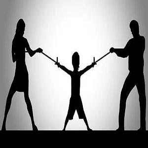
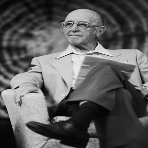
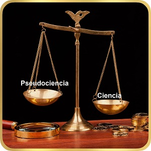

Actividad Integradora: Análisis de Incidente Crítico
- Estudiante: Alma Patricia Romero Campos
- UCA: Escuelas y Modelos Teóricos de la Psicología
- Docente: Oscar Alejandro Sanchez
- Universidad: Universidad Nacional Rosario Castellanos
- Fecha:30 de Octubre de 2025
Introducción
- Propósito: Analizar Incidente Crítico de Israel.
- Usar tres fuerzas y modelo contemporáneo.
- Organización:
- 1. Análisis: Psicoanálisis, Conductismo, Humanismo.
- 2. Análisis: Terapia Sistémica.
- 3. Definición de conceptos clave.
- 4. Consideraciones y Conclusión.

Incidente Crítico: El Caso de Israel
- Sujeto: Israel, 9 años.
- Conducta: Agresividad severa contra padres y autoridad.
- Antecedentes: Fracaso con pseudociencias (cristales, chakras).
- Contexto: Madre ansiosa, padre distante.
- Israel dice: "Es lo que siento..."
- Israel desea: "Que alguien lo abrace..."

Fuerza 1: Psicoanálisis
- Explicación: Agresión es síntoma de conflicto.
- Conflicto ubicado en el Inconsciente.
- Está en Etapa de Latencia (9 años).
- Conducta sugiere Fijación en Etapa Fálica.
- Agresión (padre, maestros) = Complejo de Edipo .
- Ello (impulsos) domina a un Yo .
Conceptos Psicoanalíticos
- Inconsciente: Alberga deseos y recuerdos reprimidos.
- Ello (Id): Opera por Principio de Placer. Busca gratificación.
- Complejo de Edipo: Apego/rivalidad con padres .
- Fijación: Energía (libido) vinculada a una etapa.
Consideraciones (Psicoanálisis)
- Método: Aplicar Método Psicoanalítico.
- Objetivo: Hacer consciente lo inconsciente.
- Técnica: Asociación Libre (iniciada con plastilina).
- Relación: Analizar la Transferencia (mirada retadora).
- Terapeuta: Manejar Contratransferencia (ansiedad sentida).
Fuerza 2: Conductismo
- Explicación: Foco en conducta observable.
- Modelo: Condicionamiento Operante.
- ED (Estímulo): Orden de padres ('recoge juguetes').
- RO (Respuesta): Israel golpea o es agresivo.
- Consecuencia: "A veces... le damos el celular".
- Argumento: Agresión se mantiene por éxito.
- Recibe Reforzamiento Positivo (celular).
Conceptos Conductistas
- Condicionamiento Operante: Conducta se modifica por consecuencias.
- Reforzamiento Positivo: Se agrega estímulo (celular).
- Aumenta la probabilidad de la conducta.
- Castigo: Evento que disminuye la conducta.
- Extinción: Desaparición de respuesta no reforzada.
Consideraciones (Conductismo)
- Objetivo: Modificar contingencias de refuerzo.
- Técnica 1 (Extinción): No reforzar agresión (no celular).
- Técnica 2 (Castigo Negativo): Retirar privilegio (celular).
- Técnica 3 (Refuerzo Positivo): Premiar conductas deseadas.
- Usar "aproximaciones sucesivas".
Fuerza 3: Humanismo
- Explicación: Foco en potencial humano.
- Agresión = Bloqueo de Tendencia Actualizante.
- (Maslow): Necesidades básicas insatisfechas.
- N. de Seguridad: Amenazada ("mi papá me grita").
- N. de Amor: Insatisfecha ("quiere un abrazo").
- (Rogers): Israel experimenta Incongruencia.
- (Diferencia entre Self Real y experiencia).
Conceptos Humanistas
- Jerarquía de Necesidades: (Maslow) Básicas primero. Luego Autorrealización.
- Tendencia Actualizante: (Rogers) Impulso innato para crecer.
- Aceptación Positiva Incondicional: Aceptar al cliente y sus sentimientos.
- Empatía: Sentir el mundo del consultante.

Consideraciones (Humanismo)
- Objetivo: Ayudar al individuo a crecer.
- Rol Terapeuta: Aplicar "actitudes básicas".
- Técnica (Empatía): Validar experiencia ("Se parte...").
- Técnica (Aceptación): Ofrecer "espacio cálido".
- Permitir expresión de enojo (plastilina).
- Enfoque: "Presente y experiencia inmediata".
Modelo: Terapia Sistémica
- Explicación: Problema no está en Israel.
- Problema está en el sistema familiar.
- Israel es el "Paciente Identificado" .
- Se observa Causalidad Circular:
- 1. Padres distantes. 2. Israel agresivo.
- 3. Agresión desvía atención de problema marital.
- Agresión mantiene Homeostasis (equilibrio disfuncional).
Conceptos Sistémicos
- Sistema: Familia. Un cambio afecta a todos.
- Paciente Identificado: Miembro que presenta el síntoma.
- Causalidad Circular: Patrones recursivos. Cada respuesta alimenta otra.
- Homeostasis: Sistema resiste cambio. Preserva equilibrio disfuncional[.
Consideraciones (Sistémica)
- Enfoque: Intervención debe ser Terapia Familiar.
- Técnica 1: Genograma. Ver patrones transgeneracionales.
- Técnica 2: Preguntas Circulares.
- Técnica 3: Reencuadre (Reframing). Reformular significado.
- Ej. "Agresión de Israel une a la familia".
- Objetivo: Cambio de Segundo Orden (modificar reglas).
¿Cuál es el modelo más pertinente?
- Respuesta: La Terapia Sistémica.
- Justificación:
- Conductismo explica *cómo*, no *por qué*.
- Psicoanálisis y Humanismo ignoran dinámica familiar.
- El problema es de *interacción*.
- Israel es Paciente Identificado.
- Sistema necesita síntoma para Homeostasis.
Psicología Científica vs. Pseudociencia
- ¿Cómo explicarlo a los padres?
- 1. Validar: "Entiendo su frustración".
- 2. Diferenciar: "Cristales se basan en creencias".
- 3. Definir: "Psicología es ciencia. Usamos fundamentos sólidos".
- 4. Proceso: "Hago evaluación diagnóstica, no adivino".
- 5. Riesgo: "Pseudociencia empeoró el problema".
- Mi ética es usar intervención basada en evidencia.

Conclusión: Reflexión del Aprendizaje
- ¿Qué aprendí? Un caso, múltiples interpretaciones.
- (Impulsos, refuerzos, potencial, sistema).
- ¿Qué aporta el marco teórico?
- Modelos teóricos dan un mapa.
- Permiten entender la *función* del síntoma.
- ¿Por qué contrastar pseudociencias?
- Retrasan la atención real. Causan más daño.
Referencias
- American Psychological Association. (2020). *Guía Normas APA (7ª edición)*.
- Universidad Nacional Rosario Castellanos. (s.f.). *Módulo 1. Primera fuerza en psicología: psicoanálisis*. [Contenido Nuclear].
- Universidad Nacional Rosario Castellanos. (s.f.). *Módulo 2. Segunda fuerza en psicología: Conductismo*. [Contenido Nuclear].
- Universidad Nacional Rosario Castellanos. (s.f.). *Módulo 3. Tercera fuerza en psicología: Humanismo*. [Contenido Nuclear].
- Universidad Nacional Rosario Castellanos. (s.f.). *Módulo 4. Modelos en Psicología*. [Contenido Nuclear].
- Naranjo, C. (2019). *La vieja y novísima Gestalt. (Parte I. Teoría)*. Cuatro vientos.
- Oaklander, R. V. (2001). *Ventana a nuestro niños: terapia gestáltica para niños y adolescentes*. Editorial Cuatro vientos.
- Perls, F. (2022). *Terapia Gestalt. Teoría y práctica*. Terracota.